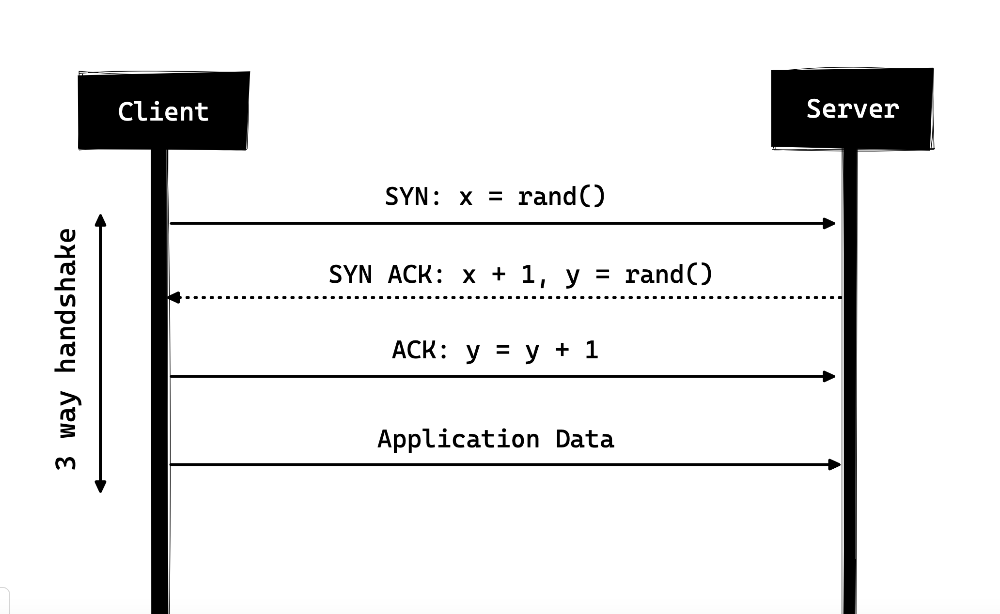

Todo lo que necesitas saber sobre HTTP
HTTP es el protocolo que todo desarrollador web debería conocer, ya que es el motor de toda la web. Conocer HTTP sin duda puede ayudarle a desarrollar mejores aplicaciones.
En este artículo, analizaré qué es HTTP, cómo surgió, cuál es su situación actual y cómo llegamos hasta aquí.
¿Qué es HTTP?
Primero lo primero, ¿qué es HTTP? HTTP es un protocolo de comunicación de capa de aplicación basado en TCP/IP que estandariza la forma en que los clientes y servidores se comunican entre sí. Define cómo se solicita y transmite el contenido a través de Internet. Cuando digo protocolo de capa de aplicación, me refiero a que es simplemente una capa de abstracción que estandariza la forma en que se comunican los hosts (clientes y servidores). HTTP en sí depende de TCP/IP para obtener solicitudes y respuestas entre el cliente y el servidor. De forma predeterminada, se utiliza el puerto TCP 80, pero también se pueden utilizar otros puertos. HTTPS, sin embargo, utiliza el puerto 443.
HTTP/0.9 - La única línea
La primera versión documentada de HTTP fue HTTP/0.9, que se presentó en 1991. Era el protocolo más simple que jamás haya existido; tenía un único método llamado GET. Si un cliente tenía que acceder a alguna página web en el servidor, habría realizado una solicitud sencilla como la que se muestra a continuación:
Y la respuesta del servidor habría sido la siguiente:
(response body)
(connection closed)
Es decir, el servidor recibiría la solicitud, respondería con el HTML como respuesta y, una vez que se haya transferido el contenido, se cerrará la conexión.
- Sin encabezados
- "GET" era el único método permitido
- La respuesta tenía que ser HTML
Como se puede ver, el protocolo realmente no era más que un trampolín para lo que estaba por venir.
HTTP/1.0 - 1996
En 1996, evolucionó la siguiente versión de HTTP, es decir, HTTP/1.0, que mejoró enormemente la versión original.
A diferencia de HTTP/0.9, que solo estaba diseñado para respuestas HTML, HTTP/1.0 ahora podía manejar otros formatos de respuesta, es decir, imágenes, archivos de video, texto simple o cualquier otro tipo de contenido. Agregó más métodos (es decir, POST y HEAD), se cambiaron los formatos de solicitud/respuesta, se agregaron encabezados HTTP tanto a la solicitud como a las respuestas, se agregaron códigos de estado para identificar la respuesta, se introdujo soporte para conjuntos de caracteres, se incluyeron tipos de varias partes, autorización, almacenamiento en caché, codificación de contenido y más.
Así es como podría haber sido un ejemplo de solicitud y respuesta HTTP/1.0:
GET / HTTP/1.0
Host: cs.fyi
User-Agent: Mozilla/5.0 (Macintosh; Intel Mac OS X 10_10_5)
Accept: */*
Como puede ver, junto con la solicitud, el cliente también envió su información personal, el tipo de respuesta requerida, etc. Mientras que en HTTP/0.9 el cliente nunca podía enviar dicha información porque no había encabezados.
Un ejemplo de respuesta a la solicitud anterior podría haber sido como el que se muestra a continuación:
HTTP/1.0 200 OK
Content-Type: text/plain
Content-Length: 137582
Expires: Thu, 05 Dec 1997 16:00:00 GMT
Last-Modified: Wed, 5 August 1996 15:55:28 GMT
Server: Apache 0.84
(response body)
(connection closed)
Al comienzo de la respuesta aparece HTTP/1.0 (HTTP seguido del número de versión), luego aparece el código de estado 200 seguido de la frase de motivo (o descripción del código de estado, si lo prefiere).
En esta versión más nueva, los encabezados de solicitud y respuesta se conservaban codificados en ASCII, pero el cuerpo de la respuesta podía ser de cualquier tipo, es decir, imagen, vídeo, HTML, texto sin formato o cualquier otro tipo de contenido. Por tanto, ahora el servidor podía enviar cualquier tipo de contenido al cliente; no mucho después de la introducción, el término "hipertexto" en HTTP se volvió inapropiado. HMTP o protocolo de transferencia de hipermedia podría haber tenido más sentido, pero supongo que nos quedaremos con el nombre de por vida.
Una de las principales desventajas de HTTP/1.0 era que no se podían tener múltiples solicitudes por conexión. Es decir, cada vez que un cliente necesita algo del servidor, tendrá que abrir una nueva conexión TCP y, después de que se haya cumplido esa única solicitud, se cerrará la conexión. Y para cualquier siguiente requisito, tendrá que estar en una nueva conexión. ¿Por qué es malo? Bueno, supongamos que visita una página web que tiene 10 imágenes, 5 hojas de estilo y 5 archivos javascript, lo que suma un total de 20 elementos que deben obtenerse cuando se realiza una solicitud a esa página web. Dado que el servidor cierra la conexión tan pronto como se ha cumplido la solicitud, habrá una serie de 20 conexiones separadas donde cada uno de los elementos se servirá uno por uno en sus conexiones separadas. Esta gran cantidad de conexiones da como resultado un grave impacto en el rendimiento, ya que requerir una nueva conexión TCP impone una penalización significativa en el rendimiento debido al protocolo de enlace de tres vías seguido de un inicio lento.
Three-way Handshake
El protocolo de enlace de tres vías (Three-way Handshake) en su forma más simple es que todas las conexiones TCP comienzan con un protocolo de enlace de tres vías en el que el cliente y el servidor comparten una serie de paquetes antes de comenzar a compartir los datos de la aplicación.
- SYN: el cliente elige un número aleatorio, digamos x, y lo envía al servidor.
- SYN ACK: el servidor reconoce la solicitud enviando un paquete ACK al cliente, que se compone de un número aleatorio, digamos y recogido por el servidor y el número x+1 donde x es el número enviado por el cliente.
- ACK: el cliente incrementa el número recibido del servidor y envía un paquete ACK con el número y+1.
Una vez que se completa el protocolo de enlace de tres vías, puede comenzar el intercambio de datos entre el cliente y el servidor. Cabe señalar que el cliente puede comenzar a enviar los datos de la aplicación tan pronto como envíe el último paquete ACK, pero el servidor aún tendrá que esperar a que se reciba el paquete ACK para poder cumplir con la solicitud.
Sin embargo, algunas implementaciones de HTTP/1.0 intentaron superar este problema introduciendo un nuevo encabezado llamado "Connection: keep-alive", cuyo objetivo era decirle al servidor “Hola servidor, no cierres esta conexión, la necesito de nuevo”. Pero aun así, no tenía un amplio soporte y el problema persistía.
Además de no tener conexión, HTTP también es un protocolo sin estado, es decir, el servidor no mantiene la información sobre el cliente y, por lo tanto, cada una de las solicitudes debe tener la información necesaria para que el servidor cumpla con la solicitud por sí solo sin ninguna asociación con ninguna solicitud anterior. Y esto agrega leña al fuego, es decir, además de la gran cantidad de conexiones que el cliente debe abrir, también debe enviar algunos datos redundantes por cable, lo que provoca un mayor uso del ancho de banda.
HTTP/1.1 - 1999
Tras tan solo 3 años de HTTP/1.0, la siguiente versión, HTTP/1.1, se lanzó en 1999; esta introdujo numerosas mejoras respecto a su predecesora. Las principales mejoras respecto a HTTP/1.0 incluían:
- Se agregaron nuevos métodos HTTP, que introdujeron PUT, PATCH, OPTIONS, DELETE.
- Identificación del nombre de host: En HTTP/1.0 el encabezado de host no era obligatorio, pero HTTP/1.1 lo hizo obligatorio.
- Conexiones persistentes: Como se mencionó anteriormente, en HTTP/1.0 solo se permitía una solicitud por conexión y esta se cerraba en cuanto se completaba, lo que causaba graves problemas de rendimiento y latencia. HTTP/1.1 introdujo las conexiones persistentes; es decir, las conexiones no se cerraban por defecto, sino que se mantenían abiertas, lo que permitía múltiples solicitudes secuenciales. Para cerrar las conexiones, el encabezado "Connection: close" debía estar disponible en la solicitud. Los clientes suelen enviar este encabezado en la última solicitud para cerrar la conexión de forma segura.
- Pipelining: También se introdujo la compatibilidad con el pipeline, donde el cliente podía enviar múltiples solicitudes al servidor sin esperar una respuesta en la misma conexión, y el servidor debía enviar la respuesta en la misma secuencia en que se recibían las solicitudes. Pero, ¿cómo sabe el cliente que este es el punto donde se completa la descarga de la primera respuesta y comienza el contenido de la siguiente? Para solucionar esto, debe haber un encabezado "Content-Length" que los clientes puedan usar para identificar dónde termina la respuesta y comenzar a esperar la siguiente.
Se debe tener en cuenta que para beneficiarse de las conexiones persistentes o la canalización, el encabezado Content-Length debe estar disponible en la respuesta, porque esto le permitirá al cliente saber cuándo se completa la transmisión y puede enviar la siguiente solicitud (en la forma secuencial normal de enviar solicitudes) o comenzar a esperar la próxima respuesta (cuando la canalización está habilitada).
Pero este enfoque seguía presentando un problema. ¿Qué sucede si los datos son dinámicos y el servidor no puede determinar la longitud del contenido con antelación? En ese caso, las conexiones persistentes no son beneficiosas, ¿verdad? Para solucionar esto, HTTP/1.1 introdujo la codificación fragmentada. En tales casos, el servidor puede omitir la longitud del contenido y optar por la codificación fragmentada (hablaremos más sobre esto más adelante). Sin embargo, si ninguna de estas opciones está disponible, la conexión debe cerrarse al finalizar la solicitud.
- Transferencias fragmentadas: En el caso de contenido dinámico, cuando el servidor no puede determinar la longitud del contenido al iniciar la transmisión, puede empezar a enviar el contenido por partes (fragmento a fragmento) y añadir la longitud del contenido a cada fragmento al enviarlo. Una vez enviados todos los fragmentos, es decir, cuando la transmisión se ha completado, envía un fragmento vacío (el que tiene la longitud del contenido establecida en cero) para identificar al cliente que la transmisión se ha completado. Para notificar al cliente sobre la transferencia fragmentada, el servidor incluye el encabezado Transfer-Encoding: chunked.
- A diferencia de HTTP/1.0, que solo tenía autenticación básica, HTTP/1.1 incluía autenticación de proxy y de resumen.
- Almacenamiento en caché
- Rangos de bytes
- Conjuntos de caracteres
- Negociación lingüística
- Cookies de cliente
- Soporte de compresión mejorado
- Nuevos códigos de estado
- ...y más
No voy a extenderme en todas las características de HTTP/1.1 en esta publicación, ya que es un tema aparte y ya se puede encontrar mucha información al respecto. El documento que se recomienda leer es "Diferencias clave entre HTTP/1.0 y HTTP/1.1" para aquellos que quieran obtener mayor información acerca del tema.
HTTP/1.1 se introdujo en 1999 y fue un estándar durante muchos años. Si bien mejoró mucho con respecto a su predecesor, con la web en constante evolución, comenzó a mostrar su antigüedad. Cargar una página web hoy en día consume más recursos que nunca. Una página web simple tiene que abrir más de 30 conexiones. Si bien HTTP/1.1 tiene conexiones persistentes, ¿por qué tantas conexiones? ¿Se preguntarán? La razón es que, en HTTP/1.1, solo puede haber una conexión activa a la vez. HTTP/1.1 intentó solucionar esto introduciendo la segmentación, pero no solucionó el problema por completo debido al bloqueo de cabecera, donde una solicitud lenta o pesada puede bloquear las solicitudes posteriores. Una vez que una solicitud se atasca en una segmentación, debe esperar a que se completen las siguientes. Para superar estas deficiencias de HTTP/1.1, los desarrolladores comenzaron a implementar soluciones alternativas, por ejemplo, el uso de hojas de sprites, imágenes codificadas en CSS, archivos CSS/Javascript gigantescos, fragmentación de dominios, etc.
SPDY - 2009
Google se adelantó y comenzó a experimentar con protocolos alternativos para acelerar la web y mejorar la seguridad, a la vez que reducía la latencia de las páginas web. En 2009, anunció SPDY.
Se observó que si aumentamos el ancho de banda, el rendimiento de la red mejora inicialmente, pero llega un punto en que la mejora no es significativa. Sin embargo, si se hace lo mismo con la latencia, es decir, si la reducimos continuamente, se obtiene una mejora constante. Esta fue la idea central de SPDY para la mejora del rendimiento: reducir la latencia para aumentar el rendimiento de la red.
Las características de SPDY incluyen multiplexación, compresión, priorización, seguridad, etc. No voy a entrar en detalles sobre SPDY, ya que tendrás una idea cuando entremos en los detalles de HTTP/2 en la siguiente sección, como dije, HTTP/2 está principalmente inspirado en SPDY.
SPDY no pretendía realmente reemplazar a HTTP; era una capa de traducción sobre HTTP que existía en la capa de aplicación y modificaba la solicitud antes de enviarla a la red. Empezó a convertirse en un estándar de facto y la mayoría de los navegadores comenzaron a implementarlo.
En 2015, en Google no querían tener dos estándares en competencia, por lo que decidieron fusionarlos con HTTP, dando origen a HTTP/2 y dejando obsoleto SPDY.
HTTP/2 - 2015
A estas alturas, ya debe estar convencido de por qué necesitábamos otra revisión del protocolo HTTP. HTTP/2 se diseñó para el transporte de contenido con baja latencia. Las características o diferencias clave con respecto a la versión anterior de HTTP/1.1 incluyen:
- Binaria en lugar de textual
- Multiplexación: múltiples solicitudes HTTP asincrónicas a través de una única conexión.
- Compresión de encabezado mediante HPACK.
- Server Push: múltiples respuestas para una sola solicitud.
- Solicitar priorización
- Seguridad
1. Protocolo binario
HTTP/2 tiende a abordar el problema de la mayor latencia que existía en HTTP/1.x al convertirlo en un protocolo binario. Al ser un protocolo binario, es más fácil de analizar, pero a diferencia de HTTP/1.x, ya no es legible para el ojo humano. Los componentes principales de HTTP/2 son los marcos y los flujos.
Marcos y transmisiones
Los mensajes HTTP ahora se componen de uno o más marcos (frames). Hay un frame HEADERS para los metadatos y un frame DATA para la carga útil. Existen otros tipos de frames (HEADERS, DATA, RST_STREAM, SETTINGS, PRIORITY, etc.) que puede consultar en las especificaciones HTTP/2.
Cada solicitud y respuesta HTTP/2 recibe un ID de flujo único y se divide en frames. Los frames son simplemente fragmentos de datos binarios. Un conjunto de frames se denomina flujo. Cada frame tiene un ID de flujo que identifica el flujo al que pertenece y un encabezado común. Además de que el ID de flujo es único, cabe mencionar que cualquier solicitud iniciada por el cliente utiliza números impares, mientras que la respuesta del servidor utiliza ID de flujo pares.
Además de los frames HEADERS y DATA, otro tipo de frame que vale la pena mencionar es RST_STREAM, un tipo especial que se utiliza para interrumpir una transmisión. Es decir, el cliente puede enviar este frame para avisar al servidor que ya no la necesita. En HTTP/1.1, la única forma de que el servidor dejara de enviar la respuesta al cliente era cerrar la conexión, lo que aumentaba la latencia, ya que se debía abrir una nueva conexión para cada solicitud consecutiva. En HTTP/2, el cliente puede usar RST_STREAM y dejar de recibir una transmisión específica mientras la conexión sigue abierta y las demás transmisiones siguen en reproducción.
2. Multiplexing (Multiplexación)
Dado que HTTP/2 es ahora un protocolo binario y, como mencioné anteriormente, utiliza tramas y flujos para solicitudes y respuestas, una vez que se abre una conexión TCP, todos los flujos se envían asincrónicamente a través de la misma conexión sin abrir conexiones adicionales. A su vez, el servidor responde de la misma forma asincrónica, es decir, la respuesta no tiene orden y el cliente utiliza el ID de flujo asignado para identificar el flujo al que pertenece un paquete específico. Esto también soluciona el problema de bloqueo de cabecera de línea que existía en HTTP/1.x; es decir, el cliente no tendrá que esperar la solicitud que tarda y las demás solicitudes se seguirán procesando.
3. Compresión del encabezado
Formaba parte de una RFC independiente cuyo objetivo específico era optimizar los encabezados enviados. En esencia, al acceder constantemente al servidor desde el mismo cliente, se envían muchos datos redundantes en los encabezados una y otra vez. A veces, las cookies pueden aumentar el tamaño de los encabezados, lo que resulta en un mayor consumo de ancho de banda y una mayor latencia. Para solucionar esto, HTTP/2 introdujo la compresión de encabezados.
A diferencia de la solicitud y la respuesta, los encabezados no se comprimen en formatos gzip o compress, etc., pero existe un mecanismo diferente para la compresión de encabezados, que consiste en codificar valores literales mediante el código Huffman y mantener una tabla de encabezados por el cliente y el servidor, y tanto el cliente como el servidor omiten cualquier encabezado repetitivo (por ejemplo, agente de usuario, etc.) en las solicitudes posteriores y hacen referencia a ellos mediante la tabla de encabezados mantenida por ambos.
Mientras hablamos de encabezados, permítame agregar aquí que los encabezados siguen siendo los mismos que en HTTP/1.1, excepto por la adición de algunos pseudo encabezados como: `:method`, `:scheme`, `:host` y `:path`.
4. Empuje del servidor (Server Push)
El envío al servidor es otra característica destacada de HTTP/2: el servidor, sabiendo que el cliente va a solicitar un recurso, puede enviarlo sin que este lo solicite. Por ejemplo, supongamos que un navegador carga una página web, la analiza para encontrar el contenido remoto que debe cargar desde el servidor y luego envía las solicitudes correspondientes al servidor para obtener dicho contenido.
El envío de datos al servidor permite al servidor reducir los viajes de ida y vuelta al enviar los datos que sabe que el cliente va a solicitar. Para ello, el servidor envía un frame especial llamado "PUSH_PROMISE" que notifica al cliente: "¡Estoy a punto de enviarte este recurso! No me lo pidas". El frame "PUSH_PROMISE" está asociado con el flujo que generó el envío y contiene el ID del flujo prometido, es decir, el flujo en el que el servidor enviará el recurso que se va a enviar.
5. Priorización de solicitudes
Un cliente puede asignar una prioridad a un flujo incluyendo la información de priorización en el frame "HEADERS" con el que se abre el flujo. En cualquier otro momento, el cliente puede enviar un frame "PRIORITY" para cambiar la prioridad de un flujo.
Sin información de prioridad, el servidor procesa las solicitudes de forma asíncrona, es decir, sin orden. Si se asigna prioridad a un flujo, con base en esta información, el servidor decide cuántos recursos se deben asignar para procesar cada solicitud.
6. Seguridad
Se debatió extensamente si la seguridad (mediante TLS) debería ser obligatoria para HTTP/2. Finalmente, se decidió no hacerlo obligatorio. Sin embargo, la mayoría de los proveedores afirmaron que solo admitirán HTTP/2 cuando se utilice sobre TLS. Por lo tanto, aunque HTTP/2 no exige cifrado por especificaciones, prácticamente se ha convertido en obligatorio por defecto. Dicho esto, HTTP/2, al implementarse sobre TLS, impone ciertos requisitos, como el uso de TLS versión 1.2 o superior, un tamaño mínimo de clave y el uso de claves efímeras.